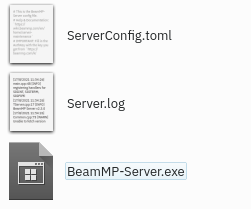

Installazione del server
Creazione del server
Basi per la creazione di un server
Introduzione
Creare un server casalingo è gratuito, ma usare a un VPS è più facile e più sicuro
I server sono una parte integrante di BeamMP, tutti i giocatori sono connessi tra loro attraverso il server. I server possono funzionare nativamente su Windows e Linux.
Puoi creare server privati, ai quali si possono connettere solo persone che inviti, o server pubblici, che saranno visibili sulla nostra ufficiale lista di server.
Per far funzionare correttamente un server è necessario seguire alcuni passi! È abbastanza semplice, ma se hai dei problemi, chiedi pure sul nostro Forum o sul nostro server Discord nel canale #support. Fai anche riferimento alla sezione di Manutenzione Server per ulteriori informazioni.
Assicurati di aver letto e compreso la LICENZA del server prima dell'uso.
Nota: Il server supporta esclusivamente indirizzi IPv4. Se non sai che tipo di indirizzo usi, visita il sito whatsmyip.org - se l'indirizzo contiene _:_ due punti, è di tipo IPv6. In tal caso devi investigare più a fondo e capire se hai a disposizione anche un indirizzo IPv4. Per far ciò puoi telefonare al tuo ISP chiedendo informazioni a riguardo, o chiedi a qualcuno che se ne intende che conosci. Il supporto per gli indirizzi IPv6 è in programma.
Configurare il server
La configurazione consiste di pochi passi che sono obbligatori da seguire.
1. Port forwarding
Se stai utilizzando un VPS (Virtual Private Server) o un Rootserver, puoi generalmente saltare questo passo. Se non sei sicuro di cosa sia un VPS o Rootserver, non lo stai usando.
Questo passo è necessario se vuoi che qualcuno all'esterno della tua casa ("all'esterno del tuo network locale o LAN") possa accedere al server.
LIMITAZIONE DI RESPONSABILITA':
Port forward è rischioso
Facendo il port forwarding sei a conoscenza dei rischi legati ad aprire le porte del tuo network di casa al pubblico e di conseguenza sollevi BeamMP da ogni responsabilità di danni che potrebbero succedere a te o al tuo ambiente domestico.
Non ci assumiamo alcuna responsabilità per i contenuti presenti su pagine esterne dei servizi presentati.
È consigliato affidarsi a uno dei nostri partner per l'hosting del server!
Servizi a pagamento:
- Horizon Hosting
- Snakecraft Hosting
- Connect Hosting
- Assetto Hosting
- WinHeberg
- Zap Hosting
- HostHavoc
- PedalHost
NOTA: se se sceglie di acquistare il server da uno dei partner, il passo di Port Forwarding è superfluo.
Per effettuare il port forwarding, affidarsi a questa guida esterna.
1.1 Firewall
A seconda della tua configurazione, potresti dover aggiungere BeamMP-Server alle regole del tuo firewall. Questo è il caso di Windows (spegnere il firewall di solito non funziona) e su molti server Linux pre-configurati.
Qui, come nel caso del port forwarding, devi permettere il traffico sia in entrata sia in uscita e sia TCP sia UDP di BeamMP-Server attraverso il firewall. Se invece il tuo firewall richiede una porta, usa la stessa utilizzata nel passo precedente ("1. Port forwarding").
Se hai dei problemi, chiedi pure sul nostro Forum o sul nostro server Discord nel canale #support.
2. Ottenere una chiave di autenticazione
La chiave di autenticazione, spesso chiamata "AuthKey", è necessaria per creare un server pubblico, ma è consigliato usarla anche per i server privati.
Ti servirà un account Discord per questo passo. Discord è necessario per evitare problemi di spam.
2.1. Accedere alla pagina delle chiavi
Fai il login con Discord al Keymaster. Dalla homepage del Keymaster, clicca su "Keys" a sinistra dello schermo:

2.2. Creare una chiave
Per creare una chiave clicca il "+" verde presente in alto a destra.

2.3. Compilare i dati per la chiave
Inserisci il nome del server (questo è solo il nome per la chiave, non è il nome vero e proprio del server), poi clicca "Create", ad esempio:

Il risultato dovrebbe essere simile a questo:

NON CONDIVIDERE MAI QUESTA CHIAVE. TRATTALA COME UNA PASSWORD
Hai un numero limitato di chiavi. Puoi utilizzare una chiave su un server per volta, quindi non puoi far partire due server con la stessa chiave nello stesso momento.
2.4. Copiare la chiave
Copia il testo del campo "key", in questo esempio è 3173a2e-6az0-4542-a3p0-ddqq5ff95558 e tienilo pronto per il passo successivo. Puoi fare questo cliccando l'icona a destra della chiave:

3. Installazione
Il BeamMP-Server è disponibile per Windows e Linux. Le prossime due sezioni sono dedicate all'installazione su Windows e Linux rispettivamente.
3.a Installazione su Windows
Per l'installazione su Linux, salta alla sezione succesiva.
Ricordati di fare il port forwarding, altrimenti il tuo server non sarà raggiungibile al pubblico!
- Assicurati di aver installato i Visual C++ Redistributables, necessari per eseguire il server.
- Scarica l'eseguibile del server da beammp.com. Dovresti trovarti con un file chiamato
BeamMP-Server.exe. - Una volta scaricato, crea una cartella dove desideri e sposta al suo interno
BeamMP-Server.exe. Qui è dove il server risiederà. - Avvia il server cliccandoci due volte. Questo genererà tutti i files necessari e quando vedi del testo sul terminale, puoi chiuderlo. Dovresti vedere questo file chiamato
ServerConfig.tomlnella stessa cartella diBeamMP-Server.exe. - (opzionale) Per accedere velocemente al server, crea un collegamento al desktop cliccando col tasto destro su
BeamMP-Server.exe> Invia a > Desktop (crea collegamento).
Passare ora al punto "4. Configurazione".
3.b Installazione su Linux
Utilizzando la build precompilata (consigliato)
Questo passo è valido per tutte le distribuzioni Linux per cui offriamo i files binari qui. Se usi una distribuzione o architettura differente, salta al passo "Compilazione file sorgente".
- Assicurati di avere installato tutte le dipendenze che sono elencate qui.
- Vai su beammp.com e clicca il pulsante "Download server", sarai reindirizzato alla pagina Github delle release del server.
- Scarica la versione corretta per la tua distribuzione. Per semplicità sarà chiamata
BeamMP-Server-xxxdurante la guida, dovexxxè la versione per la distribuzione che stai usando. - Una volta scaricato, crea una cartella dove desideri e sposta al suo interno
BeamMP-Server-xxx. Qui è dove il server risiederà. - Apri un terminale, naviga alla cartella dove si trova
BeamMP-Server-xxxe incolla il comandochmod +x BeamMP-Server-xxx. Questo farà in modo che si abbiano i permessi per eseguire il server. - Avvia il server con il comando
./BeamMP-Server-xxx. Questo genererà tutti i files necessari e quando vedi del testo sul terminale, puoi chiuderlo. Dovresti vedere questo file chiamatoServerConfig.tomlnella stessa cartella diBeamMP-Server-xxx. - (opzionale) È consigliato creare un utente chiamato
beammpserver(o simile), siccome non raccomandiamo di eseguire il server come root, sudo o con il proprio utente personale. Dovresti poi rendere possibile l'esecuzione del server solo da questo utente.
Passare ora al punto "4. Configurazione".
Compilazione file sorgente
È molto probabile, ma non è stato ufficialmente provato, che BeamMP-Server per Linux funzioni su distribuzioni differenti da quelle per cui offriamo i files binari qui. Se vuoi compilare i codice sorgente puoi farlo, scaricando il codice dal nostro GitHub, una guida si può trovare qui.
Infine ricordati di eseguire il server con il comando ./BeamMP-Server-xxx, dopodiché vai al passo successivo.
4. Configurazione
Dopo che il server è stato avviato almeno una volta, dovrebbe aver creato diversi files e mostrato un paio di errori; questo perché manca ancora qualcosa. La tua cartella dovrebbe contenere questi files:

Potrebbero chiamarsi ServerConfig, Server e BeamMP-Server senza estensioni, ma è corretto anche questo!
Apri ServerConfig.toml con un editor di testo come Blocco note. Per fare ciò click col tasto destro > Apri con > Blocco note o un qualsiasi altro editor di testo.
Dovresti vedere qualcosa di simile a questo:
[General]
AuthKey = ''
Debug = false
Description = 'BeamMP Default Description'
Map = '/levels/gridmap_v2/info.json'
MaxCars = 1
MaxPlayers = 10
Name = 'BeamMP Server'
Port = 30814
Private = false
ResourceFolder = 'Resources'
Questo è il tuo file di configurazione. Utilizza un formato chiamato TOML. Fai anche riferimento alla sezione di Manutenzione Server per maggiori informazioni.
Per ora ci interessa soltanto il campo AuthKey. Incolla tra le virgolette '' la chiave ottenuta nel passo "2. Ottenere una chiave di autenticazione".
Per questo esempio, dovrà essere così:
Dai anche un nome al tuo server tramite il campoName. Puoi utilizzare colori e altri tipi di formattazione seguendo le indicazioni di questa sezione della pagina di manutenzione del server.
Se hai scelto una porta differente da 30814 inseriscila al posto di quella predefinita in Port.
IMPORTANTE: Il tuo server non sarà visibile sulla lista di server fintanto che Private = true. Se vuoi rendere visibile su tale lista il tuo server, metti Private = false.
5. Verifica di corretto funzionamento
Avvia nuovamente il server e guarda se mostra altri messaggi con l'etichetta [ERROR]. La finestra deve rimanere aperta. A questo punto puoi avviare BeamMP utilizzando il BeamMP-Launcher e dovresti trovare il tuo server con il nome specificato nel file ServerConfig.toml nella lista dei server.
5.1. Come aggiungere mod al tuo server
Sia le mod dei veicoli che una mappa mod, vanno inserite nella cartella Resources/Client all'interno della cartella del server.
5.2. Mod generiche
Se ti interessa aggiungere mod di veicoli, basta aggiungerle alla cartella Resources/Client. Verranno scaricate automaticamente da chiunque si connetta al server.
5.3. Mappe
Tutte le mappe ufficiali del gioco (quindi che non sono mod) non necessitano di essere installate, devi soltanto cambiare il valore del campo Map del file ServerConfig.toml con una di queste stringhe. Per mappe non ufficiali (mod), bisogna fare così:
- Inserire il file
.zipdella mappa nella cartellaResources/Clientall'interno della cartella del server. - Apri il file
.zipdella mappa senza estrarlo e naviga alla cartella/levels/. In questa cartella ce ne dovrebbe essere un'altra con il nome della mappa, ad esempiomyawesomedriftmap2021. Copia o ricordati questo nome esattamente come è scritto su tale cartella. - Apri il file
ServerConfig.toml. Nel campoMapdovresti vedere il valore/levels/MAPNAME/info.json, doveMAPNAMEè molto probabilmentegridmap_v2. CambiaMAPNAMEcol nome della cartella del passo precedente, per questo esempiomyawesomedriftmap2021. Salvo rare eccezioni, tutte le mappe necessitano di avere/info.jsonalla fine. Dovresti ottenere qualcosa di simile:
La mappa, come tutte le altre mod, verrà scaricata automaticamente da chiunque si connetta al server.
Se la connessione non va a buon fine, installa la mappa in BeamNG.drive (non multigiocatore) e caricala. Quando sei in gioco, apri la console con il tasto ò (se non utilizzi il layout Italiano è un tasto differente, guarda l'assegnazione di Toggle System Console in Options > Controls > Bindings nella sezione General Debug), ed esegui questo comando: print(getMissionFilename()). Otterrai così il corretto nome da utilizzare.
Il tuo server con la mappa moddata è pronto!
6. Come connettersi a un server
Come tu e altre persone possono connettersi al tuo server.
6.a. Connettersi al proprio server
Se sei il proprietario del server devi connetterti tramite connessione diretta, per fare questo, clicca il pulsante Direct Connect a sinistra della lista dei server. Lascia i parametri predefiniti (IP 127.0.0.1 e porta 30814) e clicca Connect. Se il tuo server è in esecuzione all'esterno della tua LAN devi prima trovare il suo IP e poi connetterti direttamente.
6.b. Connessione di altre persone al proprio server privato
Avviare il server. Devi condividere l'indirizzo IP e la porta del tuo server alle persone che vuoi che si connettano. Presta attenzione a chi condividi il tuo indirizzo IP! Per connettersi a un server privato clicca il pulsante Direct Connect a sinistra della lista dei server, dopodiché inserisci l'indirizzo IP e la porta del server.
6.c. Connessione di altre persone al proprio server pubblico
Per connettersi a un server pubblico basta andare sulla lista dei server, cercare il nome del server e cliccare Connect. Se non sei sicuro del nome del server, è lo stesso che hai messo nel file ServerConfig.toml.
Assicurarsi che i filtri di ricerca siano disabilitati e che la ricerca per mappa sia impostata su "Any".
Puoi controllare il Keymaster per recuperare l'indirizzo IP.
Nel caso in cui si vede l'errore "Connection Failed!", controllare il launcher per dei codici come 10060, 10061, 10030.
In questo caso siete sotto CGNAT o qualcosa è andato storto nel passo 1. Port forwarding o 1.1 Firewall.
Per controllare se si è sotto CGNAT, confrontare l'indirizzo IP WAN dalla pagina del router con l'indirizzo IP visibile da whatsmyip.org.
IPv6 non è ancora supportato.
6.e. [POTREBBE NON FUNZIONARE] Connessione di altre persone al proprio server (Hamachi)
Solo le persone nel tuo network di Hamachi possono connettersi al tuo server, non è necessario fare port forwarding in questo caso. Chi vuole connettersi, dopo essere entrato nel tuo network Hamachi, userà l'IP di Hamachi e la porta predefinita per eseguire una connessione diretta al tuo server. Per maggiori informazioni guarda la nostra guida per gli utenti Hamachi.
Hai ancora dei problemi?
Apri un thread sul Forum o sul nostro server Discord nel canale #support.